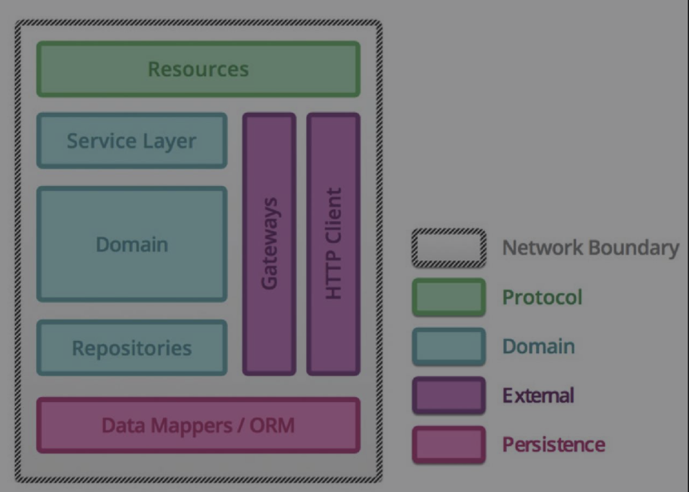

领域驱动设计综述(Thoughtworks洞见)
来源：领域驱动设计综述
在当前这个时代，按照固有的计划来执行往往会跟不上外部多变的环境。所以很多管理者开始选择主动变化，来紧跟时代。不确定性管理成了这个时代的主旋律，企业的响应力成了成败的关键。
这种情况下，对技术架构的挑战也前所未有的大。
架构设计的本质是要解决问题的复杂度，以及让系统能够快速响应外部变化并支持系统能够持续演进。
不要用固有的思维，认为某些场景或业务天生就很重很慢，无法做到快速响应。但可以看看我们每天都在使用的一些巨型系统，如互联网，可能没有什么公司的业务系统要比互联网本身更复杂，但互联网的健壮性以及变化速度是非常快的。每天都有不同的新业务及新事物在互联网上出现，部分业务出了问题也不会影响其它的业务。
互联网的设计就给可以给我们很多启发：
- 组件的划分尽量靠近变化的原点。让变化固定在组件范围内，不要让某个变化波及至多个组件。
- 组件间能够互相调用，但不应该有强依赖。
- 组件在业务上鼓励复用。
从业务出发、面向业务变化是我们现代架构设计成功的关键。架构设计的核心实质是保证面对业务变化时我们能够有足够快的响应能力。
面向业务变化而架构就要求首先理解业务的核心问题，即有针对性地进行关注点分离来找到相对内聚的业务活动形成子问题域。
业务架构和系统架构形成绑定关系，从而建立针对业务的高响应力框架。
在战略层面，DDD非常强调针对业务问题的分析和分解，通过识别核心问题域来降低分析的复杂度。
在战术层面，DDD强调通过识别问题域里的不同业务上下文来进行面向业务需求的组件化。
若想对业务问题进行很好的子域划分，必须能够很好的“讲故事”。即能够在两三分钟的时间内，清晰、场景化的描述出所做的业务。
概念
聚合是构建领域模型的基础。识别聚合是认知潜在核心业务规则的过程。
领域服务本身就像一个静态方法一样，拥有一定的逻辑但不持有任何的信息，从整个领域来看也不存在不同“版本”的同一个服务。
DDD通过子问题域（subdomain）的划分进行针对业务能力的分解。而限界上下文在解决方案域中完成了进一步分解。一个限界上下文封装了一个相对独立子领域的领域模型和服务。能够区分问题域和解决方案域，是比较困难的，而且是一个架构师能力进阶的分水岭。
实践
DDD提出了业务设计到代码实现一致性的要求。也就是说从代码的结构中我们可以直接理解业务的设计，命名得当的话，非程序人员也可以“读”懂代码。
完成业务的需求就是在领域模型上的一系列操作（应用）。这些操作包括了对核心实体状态的改变，领域事件的存储，领域服务的调用等
DDD落地常用分层架构：
各层的依赖关系是非常重要的，比如Domain不应该依赖于其它任何一层，如果实施过程中不严格规范，就会导致最终代码结构的混乱。
单元测试作为构建高质量软件过程中的标准规范，很多时候设计测试比实现应用本身更加困难。让用例尽量测试业务需求而不是实现方式本身。
基于DDD建立的核心模型之上应用TDD是顺理成章的事，因为TDD与DDD在遵循的原则上是一致的，即都是面向业务做分解和设计。
前期对核心领域模型的分析和设计是必要的，这样能够帮我们更快地响应后续业务变化。
实践DDD时仍然需要遵循“模型是用来交流的”的这一核心原则。
事件风暴是一种快速探索复杂业务领域和对领域建模的实践。 (详细介绍参考：DDD第3篇 - 事件风暴)
思考
DDD在客户端开发中的使用?